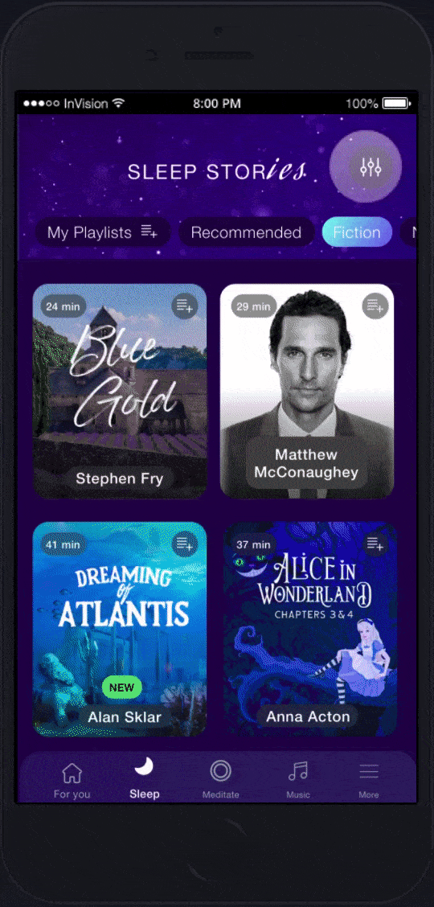

Calm:
adding new features
Case study: Adding new features to an existing app.
Goal: Add new features that complement the app and that fulfills a user necessity.
Scope: Solo UX | UI Design project.
Sketch | Invision
2 Weeks
Problem context
Calm is a meditation and sleep aid app. It has become really popular (it has the 2nd place in Health and fitness in the App store) and I myself am an avid user, it has specially help me with my sleep struggles. The goal of the project was to add features following the UI design of the app. This features needed to nicely complement an already easy to use app.
Design process
Research
To understand the needs of the users of this type of app I ran guerrilla interviews to get fast feedback from users. Since not all of the interviewees had the app, I focused some of my questions in discovering what users expected from these types of applications. I also read the reviews from the App Store and Google Play to further understand what the users were missing from this app.
Guerrilla interviews insights
- The free version of the app does not allow users to get a full understanding of all the features of the app.
- People like to enjoy the different sections of the app (sleep stories, meditation and calm body)
- Sorting through the sleep stories and music is not simple (you can only filter by one category).
- The exercise section of the app should provide visual aid in all its contents.
User
Target audience
From the research process and the type of app, I worked with the following target audience defined:
- People that are into mindfulness and fitness.
- People that struggle with sleeping and go through the sleep stories section daily.
User challenges
- Not having visual aid when they want to do exercises from the Calm body section (the Calm body section includes videos of the exercises for the longer sessions not for the stretching and warming up exercises).
- Having a hard time filtering and sorting through the Sleep stories section
- Not being able to create Sleep stories playlist. Note: By the time this project was developed, the Calm app did not included playlist but by March 8th 2020, they introduced Calm Music Playlist, a feature to create playlists with the music section of the app (it did not included the Sleep Stories).
Wireframes
Key features
The design was focused on tackling the users' challenges:
Visual aid for exercises
Sleep stories playlists
Filter for the Sleep stories
User flows
The following user flow explains the steps a user needs to take to create a Sleep Story playlist. The user flows for the other two features can be found in the project gallery section.
- 1.- Click on the playlist icon on the sleep story track.
- 2.- Click on create a new playlist.
- 3.- Set a name for the playlist.
- 4.- Click on create.
- 5.- Close confirmation pop-up.
Testing
Testing results
The testing process was done with 5 users. Main insights:
- The narrators filters was not easy to use. The tag format made it complicated for users to sort through.
- The rest of the interactions were well understood by the users.
Redesign
- From the feedback received on the testing phase, the narrators filter was modified to a dropdown list with a search option.
- The results from the testing phase helped improve the design and the changes were applied to the mockups presented in the following section.
UI Design
The goal was to present a design that followed the UI Design guides of the app.
Mockups
Prototype
New playlist flow

Filter flow
Exercise flow

Outcomes & lessons learnt
- Following the UI Design guidelines from Calm offered a chanllenge since its an app that combines many different elements in each of its screens (gradients, movement, sound, changes of colors).
- The combination of a dropdown list plus a search option offers a great solution when users need to sort through many options.
- The exercise aid was implemented with illustrations since it would allow the voice of the narrator to continue being the main focus of the section.
- All the new features added followed the UI guidelines and the new icons implemented have a simple estetic to blend properly with the app.
- As a next step we could analyse the implementation of the filter feature in other sections of the app, like Music or Meditation.

{kind=link}
{kind=link}